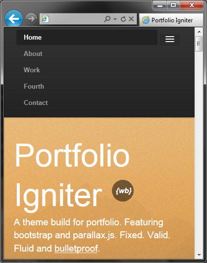
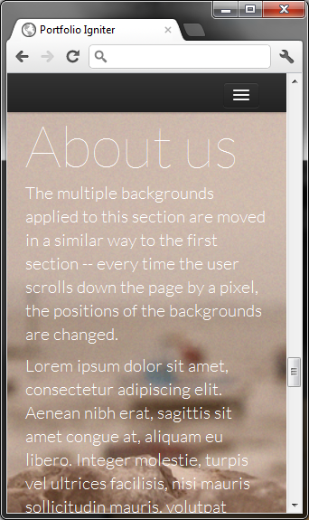

Thank you for buying "Portfolio Igniter" theme from {Wrapbootstrap} !
css/bootstrap.css - bootstrap main CSS file.
css/bootstrap-responsive.min.css - bootstrap responsive CSS file.
css/render.css - theme CSS file.
css/render.mobile.css - theme CSS file for mobile devices.
http://ajax.aspnetcdn.com/ajax/jQuery/jquery-1.7.1.min.js - jQuery from Microsoft Azure CDN (note: faster than Google CDN by 1-3 ms).
js/jquery.parallax-1.1.js - Parallax.js scrooling effect.
js/bootstrap-scrollspy.js - The ScrollSpy plugin is for automatically updating nav targets based on scroll position.
js/bootstrap-collapse.js - Get base styles and flexible support for collapsible components like accordions and navigation.
js/jquery.localscroll-1.2.7-min.js - Part of Parallax.js for HTML "objects".
js/jquery.scrollTo-1.4.2-min.js - JavaScript for scrooling.
img/ - Bootstrap sprites.
assets/ - "Portfolio Igniter" images.
From 1.1 version "Portfolio Igniter" is availabe for mobile devices. Source : mobile.html.
Note: then using background images in mobile version - you must make them in portrait orientation.
For example : iPad : 1024 x (>2000px). 2000px or more depending on content height. If you see a white background while scrooling that's because image height is to small.
Registration is free on sxc.hu, you just need to leave credits.
"Portfolio Igniter" is responsive, fluid theme. There should be no problems viewing on mobile devices and decent browsers.
 
Photohop files are documentated already.
Note : There is a pseudo-filter on all background images which adds "same" look on different/random images.
There is also some documentation in render.css and index.html.
Please leave a feedback on {Wrapbootsrtap}. For fixes, bugs and support : contact me augustinas@digvm.com.